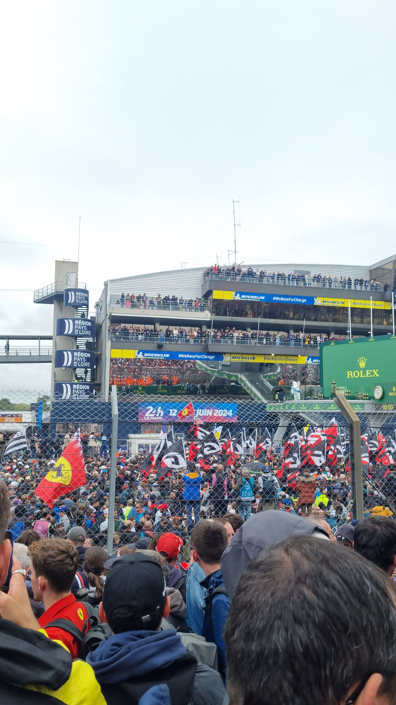
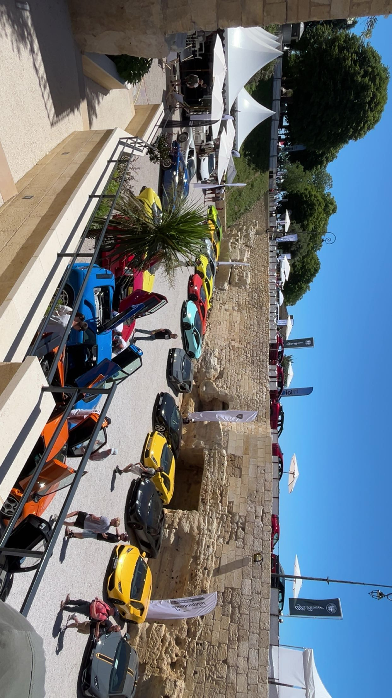

Le sport automobile
Étant très proche de mon père, j'ai grandi avec sa passion pour le sport automobile, que nous avons fini par partager. J'ai donc pu assister à des rallyes, des rassemblements et des courses de voitures.
Moto
Voiture
Courses

